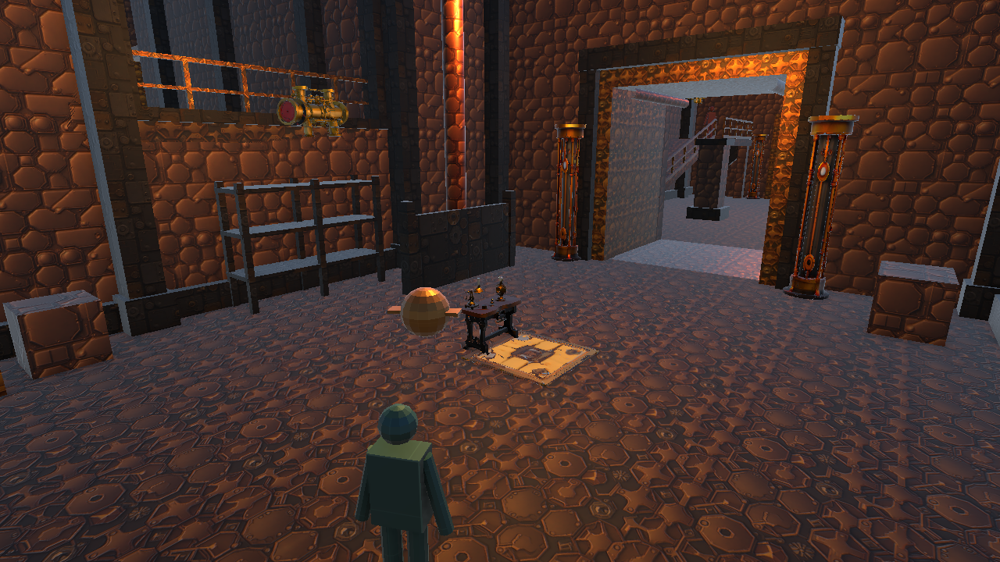
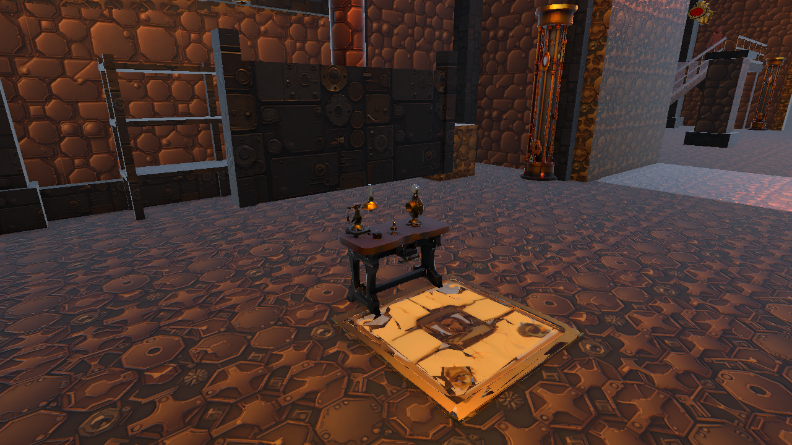
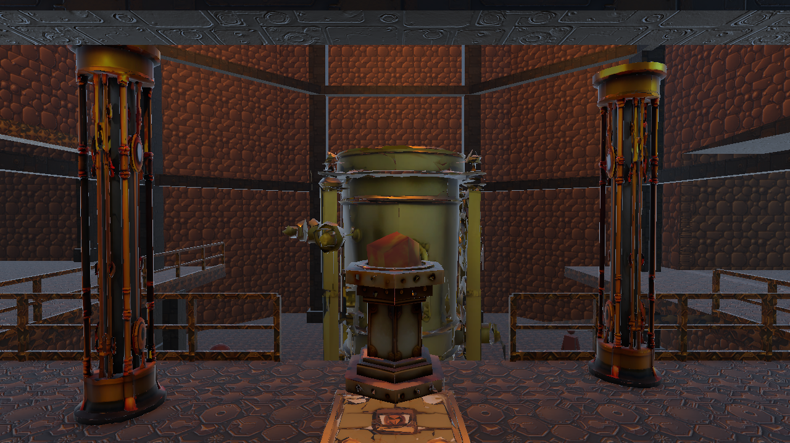
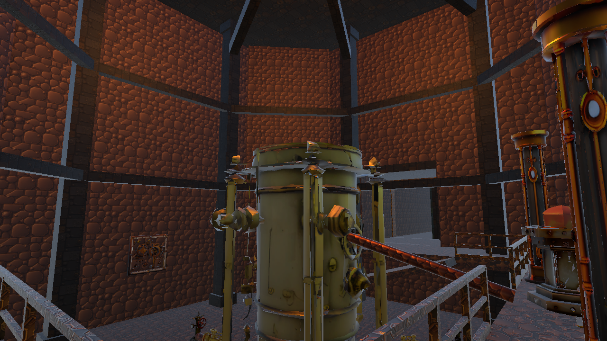
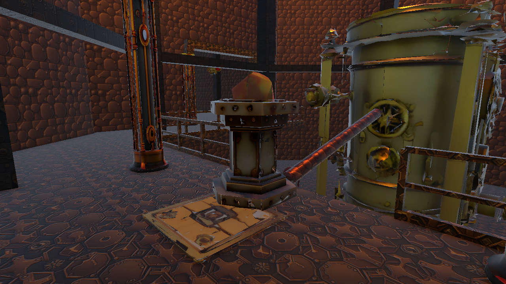
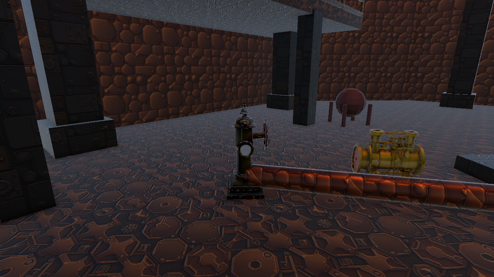
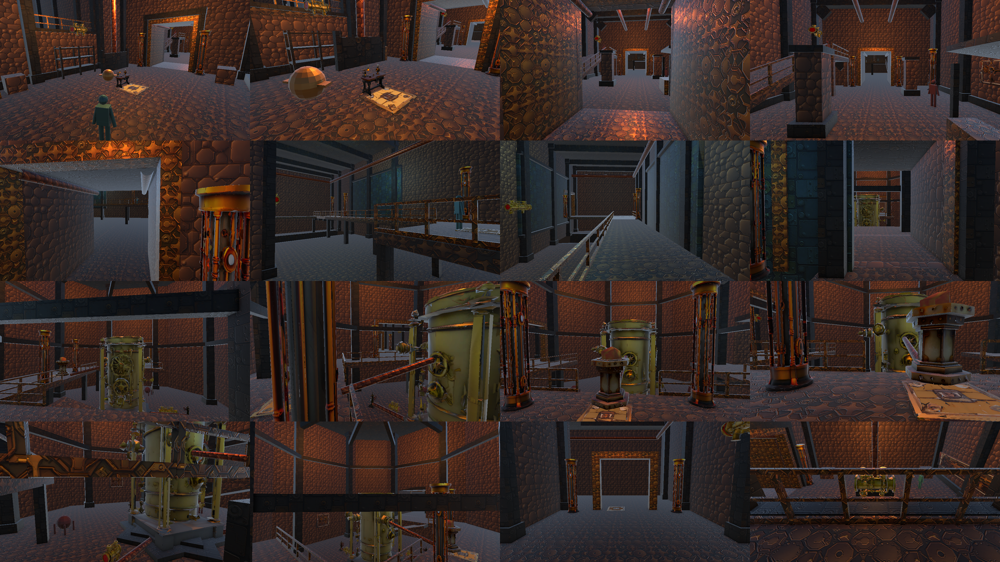

RUN mega_v5 — C5 Props Re-3D Vista Unica FLUX (Aguardando Aprovacao do Bruno)
3 props regenerados em 3D a partir dos conceitos FLUX.1-dev FP8 com gate_pass=true (bancada_relogio, no_resincronia, valvula_ritmica) + sirene_mestra mantida (ja havia passado no gate). validate_scene --strict PASS (5/5 luzes, 67k/150k tris, 15/120 draw calls) | PlayMode M1-M2 2/2 PASSED.
Z1 Oficina — Bancada Relogio FLUX (wide)

Z1 — c5_prop_bancada_relogio FLUX (close-up)

Z4 Camara — Sirene + No FLUX + Valvulas FLUX

Z4 — c5_prop_sirene_mestra (mantida, gate PASS)

Z4 — c5_prop_no_resincronia FLUX (close-up)

Z4 — c5_prop_valvula_ritmica FLUX (close-up)

Walkthrough C5 Regen v5
Contact Sheet 4x4
